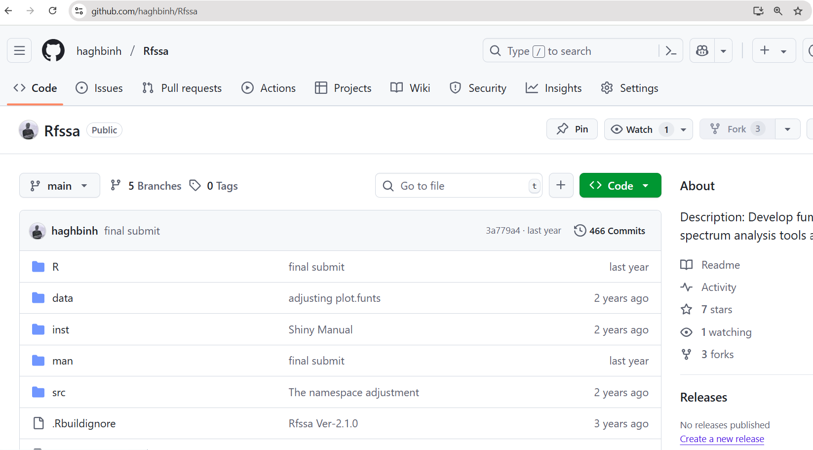

Short Course on R Tools
CRAN submission and Collaborate via GitHub
Marquette University
SCoRT - Summer 2025
Outlines
- CRAN Submission: Overview
- Requirements Before Submission
- Handling NOTEs and WARNINGs
- Simulate a CRAN Check
- Submit to CRAN
- Collaborate via GitHub
1. CRAN Submission: Overview
CRAN is the Comprehensive R Archive Network — the main repository for R packages.
Submitting to CRAN means:
- ✅ Your package is publicly available
- 🧪 It passes strict quality checks
- 🌍 It becomes accessible via
install.packages("yourpkg")
2. Requirements Before Submission
Make sure your package:
- Passes
R CMD checkwith no ERRORs, no WARNINGs, and no (avoidable) NOTEs - Has proper documentation for all exported functions
- Has a valid
LICENSE - Uses a CRAN-acceptable package name
- Has examples that run in < 5 seconds
3. Handling NOTEs and WARNINGs
Some NOTEs are common (e.g., missing author ORCID), but…
❗ Never submit to CRAN with unaddressed ERRORs or WARNINGs
To reduce NOTEs:
- Add your ORCID via
Authors@R - Ensure
TitleandDescriptionare plain text - Avoid using
cat()orprint()in package code unless essential
4. Simulate a CRAN Check 🧪
Use rhub to simulate CRAN checks on different platforms:
Or test specific platforms:
✅ This helps catch issues that only appear on Windows or macOS.
5. Submit to CRAN
Use the devtools helper:
This will:
- Check your package one final time
- Ask you to confirm
- Open the CRAN web form in your browser
- Help generate an email to CRAN maintainers
📬 What Happens After Submission?
- You’ll get an automated confirmation email
- Within ~24–72 hours, a CRAN maintainer will review your package
- They may:
- Accept it immediately ✅
- Request fixes or clarifications ✍️
- Reject with detailed reasons ❌
🔄 Updating a CRAN Package
To submit an update:
- Bump the version (e.g., from 1.0.0 → 1.0.1)
- Add a clear
NEWS.mdentry - Ensure compatibility with current R version and dependencies
- Follow the same submission process
📌 You can only submit once every 1–2 weeks (per package).
6. Collaborate via GitHub
🔁 Version Control Essentials
- Track and restore changes in code over time
- Collaborate without overwriting others’ work
- Revert to earlier working versions if bugs appear
🛠 Tools Used:
git(local)GitHub(remote)RStudio(IDE)
📦 Example: You change a function in
plot_utils.R, commit it with message “Refactor histogram labels”, and push to GitHub to share with team.
📬 Example: Rfssa Package Github
🐙 Git & GitHub Basics
- 🔹Git: Version control system for your local project
- 🔹GitHub: Cloud platform to share and collaborate
📝 Key Terms:
- Commit = Savepoint
- Push/Pull = Send/Receive changes
- Repo = Project folder
📦 Example: You push your R package to GitHub, allowing your coauthor to edit documentation and submit a pull request.
📦 Installing Git
- 🔹 Go to git-scm.com
- Choose your operating system:
- Windows: Download
.exeand install with default options - macOS: Install via Homebrew
brew install gitor Git installer - Linux: Use package manager, e.g.:
- Windows: Download
🧪 Verifying Git Installation
🧪 Run this in your Terminal (or Command Prompt):
💡 If this works, Git is installed correctly!
🔑 Configuring Git Identity
🔧 Set your global Git identity:
🧭 Connect GitHub to R (Create PAT)
- In R:
- GitHub will open — generate a Personal Access Token (PAT)
- Copy the token (only shown once!)
- Back in R:
✅ You’ve now authenticated GitHub from R!
🧪 Check Setup
Use this helpful diagnostic tool:
💡 This tells you:
- Whether Git is installed
- Whether GitHub is connected
- If PAT is stored
📁 Creating a New Git-Enabled Project
In RStudio:
- File → New Project
- Choose: New Directory → R Package (or New Project)
- Check the box: ✅ “Create a git repository”
- Finish project setup
📁 A
.gitfolder is created — this is a Git repo!
🌐 Connect to GitHub
Run this to create and link a GitHub repo:
This will:
- Push your project to GitHub
- Open the new repo in your browser
💡 You can now push/pull changes from RStudio Git tab
🔄 Common Git Workflows
🎯 Daily workflow steps:
- Edit
R/stats_module.R
- Stage → Commit → Push
💻 In RStudio Git tab:
- Stage: click checkbox
- Commit: type a message
- Push: upload to GitHub
🔁 Example: Commit message: “Add confidence interval to mean_plot()”
🎥 Demo: Rfssa Github Package
Resources & Further Reading
- Happy Git & GitHub for the useR: https://happygitwithr.com/
- usethis: https://usethis.r-lib.org
- GitHub Docs: workflows, Actions, projects
🙏 Thank you!
Questions & Discussion